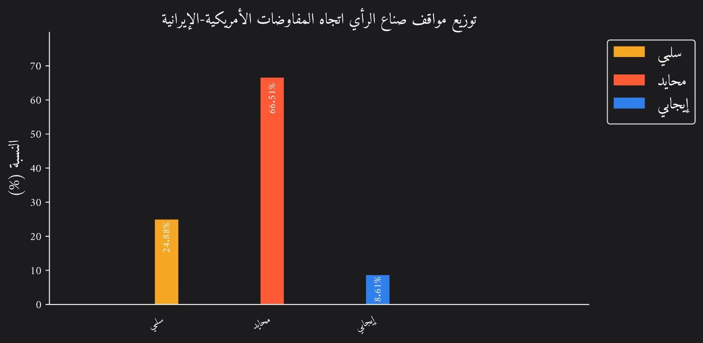
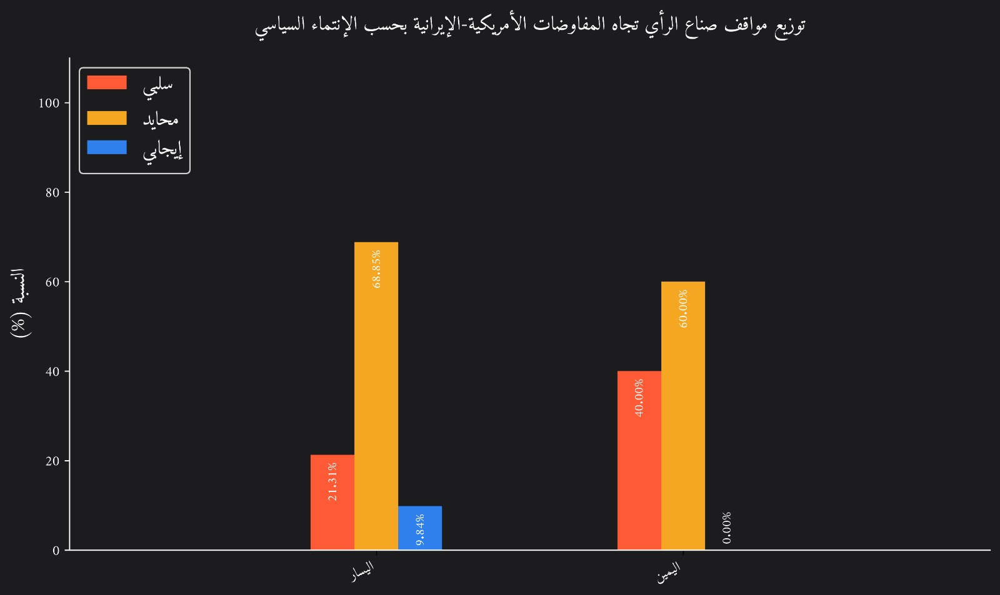

ملخص تنفيذي
اعتمد المخرج النهائي لهذا النص على تحليل ما يقارب 210 مقال رأي وتحليل ودراسة منشورة من قبل مؤسسات بحثية وإعلامية إسرائيلية بارزة تمثل بالمجمل كافة التوجهات السياسية في دولة الاحتلال. وقد تم اخضاع هذه المواد للآليات معالجة منهجية وموثوقة أكاديميا في مقاربات التحليل للبيانات الضخمة Big Data.
- ينقسم الخبراء الإسرائيليون بين من يرى في أي اتفاقٍ وسيلةً لتفادي تصعيدٍ عسكري واحتواءٍ جزئي للبرنامج النووي الإيراني، ومن يعتبره فرصة لطهران لالتقاط أنفاسها وتعزيز نفوذها الإقليمي.
- تؤكد الأصوات الإسرائيلية على أهمية التفتيش المفاجئ والشامل، مع تفكيك بنية التخصيب عالي المستوى. ويطالبون بضماناتٍ تنفيذية وعقوباتٍ تُفرض فورًا في حال ثبوت أي خرقٍ إيراني.
- تُظهر إسرائيل قلقها من تردد واشنطن في استخدام القوة، إذ تتجاذب الإدارة الأميركية تيارات “صقور” تدفع باتجاه عقوباتٍ وضغطٍ عسكري من جهة، و”حمائم” تفضّل الحلول الدبلوماسية المتدرّجة من جهة أخرى.
- يُحذّر الخبراء الإسرائيليون من أنّ ترك الصواريخ الباليستية والنفوذ الإيراني في الساحات العربية دون قيودٍ صارمة سيبقي على تهديدٍ كبير لأمن إسرائيل واستقرار المنطقة.
- تمارس تل أبيب ضغوطًا متعددة الأوجه، تشمل التحركات الدبلوماسية في واشنطن، وتنسيقًا استخباريًا مع دولٍ خليجية، إضافةً إلى التهديد المتكرر بالخيار العسكري، لضمان إدراج مطالبها في أي اتفاق.
- تشدّد إسرائيل على أنّ الأوروبيين، رغم قلقهم الأمني، يحاولون تفادي التصعيد العسكري حفاظًا على مصالحهم الاقتصادية. وهذا يخلق نوعًا من الازدواجية بين سعيهم لضمان عدم انتشار نووي ورغبتهم في إنعاش التجارة مع طهران.
- في حال نجاح المفاوضات، سيواجه الإسرائيليون تحديات مرتبطة بمراقبة أنشطة إيران السرية، ودورها الصاروخي، ومخاطر دعم حلفائها الإقليميين، مع احتمالات ازدياد التنسيق الإيراني مع روسيا والصين في خضمّ لعبة توازنات دولية معقّدة.
خلفية المشهد وأبعاد المفاوضات من منظور إسرائيلي
تعتبر الأوساط الإسرائيلية أنّ تحوّل إيران إلى قوّةٍ نوويةٍ إقليمية يشكّل تهديدًا وجوديًا ينبغي منعه بكافة السُبُل. وخلال مفاوضات الاتفاق النووي الأول (2015)، بذلت إسرائيل جهدًا كبيرًا لإقناع الولايات المتحدة والقوى الكبرى بضرورة اعتماد اتفاقٍ صارم أو التحرّك عسكريًا إن لزم الأمر. ثمّ، ومع الانسحاب الأميركي من الاتفاق، عادت لتطالب بتشديد العقوبات والضغوط على طهران لإجبارها على التراجع عن أنشطتها النووية أو قبول صيغةٍ تحول دون أي تقدّمٍ كبيرٍ في التخصيب.
إلّا أنّ اتجاه الولايات المتحدة مؤخرًا نحو مسار تفاوضي جديد مع طهران عمّق الانقسام بين الخبراء الإسرائيليين. فهناك فريقٌ يطالب بنموذج رقابي شامل (على غرار ما حصل في ليبيا) يضمن نزع قدرة إيران على تطوير سلاحٍ نووي، مع التشديد على ضرورة تفتيشٍ دقيقٍ ومستمرّ وإمكانية فرض عقوباتٍ تلقائية عند أي خرق. ويرى هذا الفريق أنّ منح إيران متنفسًا اقتصاديًا قد يعزّز نفوذها الإقليمي.
في المقابل، يجادل آخرون بأنّ الحل الدبلوماسي يبقى أفضل من الفراغ الذي قد يفضي إلى مواجهةٍ عسكرية شاملة. ويشدّدون على وجوب تنسيقٍ أميركي-أوروبي يفرض إطارًا صارمًا للرقابة، مع إبقاء العقوبات والتهديد العسكري خياراتٍ واردة إذا خرقت طهران الاتفاق. في كلتا الحالتين، يرتبط نجاح أي رقابة دولية صارمة بمدى جدّية الدول الكبرى - بما فيها روسيا والصين - في تطبيق آلياتٍ تحول دون مراوغة إيران أو إخفاء أجزاء من برنامجها.
في موازاة ذلك، تبرز مسألة الضمانات الأمنية التي ترغب إسرائيل في انتزاعها من واشنطن؛ إذ تؤكد المؤسسة العسكرية الإسرائيلية أهمية الحفاظ على الخيار العسكري، لكنها تدرك صعوبة تحرّكٍ منفردٍ ضد منشآتٍ محصّنةٍ دون دعمٍ أميركي. لذا يطالب الخبراء الإسرائيليون بتفكيكٍ أو تقييدٍ صارم للقدرات النووية الإيرانية، ومراقبةٍ مفاجئةٍ ومُحكمة، مع استمرار العقوبات الاقتصادية كورقة ضغط، فضلًا عن ردعٍ عسكريٍّ أميركي فعّال للرد على أي خروقات.
من جانبٍ آخر، يرى بعض المعلّقين أهمية إشراك حلفاء إقليميين مثل السعودية والإمارات في إطارٍ أوسع يمنع إيران من استغلال أي ثغراتٍ لتكريس نفوذها الإقليمي. ويقترحون أيضًا توسيع الاتفاق ليشمل الأنشطة الصاروخية والتدخلات الإقليمية، أو على الأقل وضع خارطة طريقٍ لمباحثاتٍ لاحقة. وفي الداخل الإسرائيلي، ينقسم الرأي بين من يرى بالضربة العسكرية المحتملة وسيلةً ضروريةً لردع إيران، ومن يخشى تبعات هذا التصعيد وما قد يجلبه من تحالفاتٍ مضادّةٍ أو انتقاداتٍ دولية. وفي المحصلة، تتوقف فرص نجاح أي مفاوضاتٍ أميركية-إيرانية على مدى قدرة الإدارة الأميركية على دمج هذه المطالب الإسرائيلية في الاتفاق، واستعداد طهران للالتزام بشروطٍ مشدّدة.
تحليل مشاعري لتوجهات صناع الرأي حول الملف المفاوضات النووية الأميركية الإيرانية
بناءً على توزيع النتائج الظاهرة في الرسوم البيانية، يتّضح أنّ الكتّاب ذوي الخلفية اليمينية يتّخذون موقفًا سلبيًّا بالكامل (بنسبة 40% سلبي، 60% محايد، و0% إيجابي)، ما يؤكد وجود رفض علني لديهم تجاه المفاوضات. في المقابل، لدى أصحاب الخلفية اليسارية توزّع أكثر تنوّعًا؛ فنحو 21.13% من مواقفهم سلبي، مقابل 9.84% إيجابي، فيما الأغلبية (68.85%) تلتزم نظرة محايدة أو متحفّظة. بالمجمل تبرز هذه الأرقام فارقًا أساسيًا بين اليمين واليسار، لكنه يوكد على شعور أكبر بالسلبية أو الترقب تجاه المفاوضات بمقابل درجات منخفضة من الإيجابية.


الانقسامات داخل الولايات المتحدة وتأثيرها على الرؤية الإسرائيلية
يرصد الخبراء الإسرائيليون باهتمام عال الانقسامات السياسية داخل واشنطن بشأن التعامل مع إيران، موضحين أنّ بعض الأصوات في الكونغرس تُطالب بتشريعاتٍ تمنع الإدارة من إبرام أي اتفاقٍ لا يشمل تفكيكًا شاملًا للبنية النووية الإيرانية. ورغم أنّ الآراء لا تورد تفاصيل دقيقة عن هوية هذه الأصوات أو لجان الكونغرس التي تمثلها، إلّا أنّ التحليلات تشير إلى وجود تيار محافظ متشدّد يضع شرط “صفر تخصيب” لإيران، ويرى في أي صيغةٍ تخوّل طهران مواصلة برنامجها وإن بشكلٍ محدود، تهديدًا للأمن الإقليمي. في المقابل، هناك فريق آخر - خصوصًا في أوساط الحزب الحاكم - يتبنّى مقاربة دبلوماسية متدرجة تُدمج في اتفاقٍ أشمل الأنشطة الصاروخية والنفوذ الإقليمي لإيران، مع احتمال منحها حق تخصيب محدود ضمن رقابة دولية مكثفة.
لا تقف الخلافات عند حدود الكونغرس فحسب، بل تمتدّ إلى داخل الإدارة الأميركية نفسها، حيث يرصد الخبراء الإسرائيليون ما بين “الصقور” و”الحمائم”. فالصقور، وفي مقدّمتهم أسماء عسكرية وأمنية على غرار الجنرال مايكل كوريلّا ومستشار الأمن القومي مايكل والتز وبعض كبار مسؤولي البنتاغون، يدافعون عن نهجٍ متشددٍ يصرّ على تشديد العقوبات والإبقاء على الخيار العسكري مطروحًا، بل يشبِّه بعضهم ما يجب أن يحدث في إيران بالسيناريو الليبي من حيث التفكيك الكامل والمنهجي. فيما يمثّل المعسكر المقابل “الحمائم” أو المعتدلين في الإدارة، ومن أبرزهم نائب الرئيس وايس ووزير الدفاع بيت ورئيس الاستخبارات تولسي غابارد والمبعوث الخاص ستيف ويتكوف. هؤلاء يرون أن الحل الدبلوماسي قد يحقّق احتواءً مدروسًا لبرنامج إيران النووي ويحول دون انزلاق المنطقة إلى صراعٍ يصعب ضبطه. ويؤكدون أنّ اعتماد “تجميدٍ صارمٍ ومراقبةٍ مكثفة” أفضل من التلويح المستمر بالعمل العسكري الذي قد لا يحظى بتأييدٍ واسع في الداخل الأميركي.
استراتيجيات التأثير الإسرائيلي على المسار التفاوضي
يتضح وفقا للخبراء أنّ إسرائيل تسعى إلى التأثير على مجرى المفاوضات بين الولايات المتحدة وإيران عبر حزمة متكاملة من الأدوات والرهانات:
- التحرّكات والضغوطات الدبلوماسية:
تكثّف إسرائيل اتصالاتها في واشنطن عبر زيارات وفود رسمية وتواصل مع الكونغرس، بهدف إبراز مخاوفها الأمنية ودفع الإدارة الأميركية إلى إدراج شروطٍ صارمة في الاتفاق. وفي الوقت نفسه، توظّف الظهور الإعلامي الدولي لشرح “مخاطر” أي رفعٍ للعقوبات عن إيران دون ضوابط حازمة، مشدّدةً على إبقاء الخيار العسكري الأميركي مطروحًا للضغط على طهران. - التضخيم للمخاوف:
يرجّح خبراء أنّ إسرائيل قد تستخدم وثائق أو صور أقمار صناعية تدّعي “خروقات” إيرانية، لتحفيز الإدارة الأميركية على التشدد. كما تستفيد من وجود تيارات متشددة رافضة لأي اتفاقٍ يمنح إيران حق التخصيب داخل الكونغرس، بالإضافة إلى الترويج لرواياتٍ ترفع مستوى القلق في واشنطن. - التنسيق الإقليمي:
تركّز إسرائيل على توسيع شبكة التحالفات مع دولٍ خليجية تشاركها القلق من تنامي نفوذ إيران، مثل السعودية والإمارات والبحرين، من أجل توحيد المواقف أمام واشنطن والإشارة إلى أنّه لا يمكن إغفال البرنامج الصاروخي أو التدخلات العسكرية لإيران في العراق وسوريا ولبنان. - التلويح بالخيار العسكري:
تحافظ إسرائيل على التلويح بعمل عسكري ضد منشآت إيران إذا رأت أنّ أمنها مهدّد وأن الاتفاق يفشل في تقييد البرنامج النووي. وتستند في ذلك إلى دعم “الصقور” داخل الكونغرس، بينما تحاول في الوقت ذاته تفادي استفزاز الإدارة الأميركية إلى درجةٍ تضرّ بالتعاون الاستخباراتي أو العسكري.
دور أوروبا بين التوفيق والحرص على المصالح
تلعب الدول الأوروبية الكبرى متمثلة في بريطانيا وفرنسا وألمانيا دورًا محوريًا في الوصول إلى تسوياتٍ وسطية تضمن، من جهة، الحيلولة دون تحول إيران إلى قوةٍ نووية، ومن جهة أخرى صون المصالح الأمنية والاقتصادية للقارة الأوروبية. ووفق رأي المحللين، تتحرك هذه الدول بدوافع عدة تشجعها على إبرام اتفاقٍ ناجح بين واشنطن وطهران.
في مقدّمة تلك الدوافع يبرز البعد الأمني ومنع الانتشار النووي، إذ ترى العواصم الأوروبية في امتلاك إيران للسلاح النووي تهديدًا صريحًا لأمن الشرق الأوسط وأوروبا على حدّ سواء. فاستمرار التوتر في منطقة الخليج قد يزعزع استقرار أسواق الطاقة ويجرّ أطرافًا إضافيةً نحو سباقٍ للتسلّح النووي. لذلك تسعى أوروبا إلى صياغة اتفاقٍ يجعل برنامج إيران النووي خاضعًا لأشدّ إجراءات الرقابة الممكنة، بحيث لا تتمكّن طهران من تخطّي عتبة التسلّح.
إلى جانب الهاجس الأمني، تتحرّك هذه الدول بدافعٍ اقتصادي لا يقلّ أهمية. فعلاقاتها الواسعة مع الشرق الأوسط تجعلها متوجسة من نشوب صراع عسكري قد يُعرّض إمدادات الطاقة والاستثمارات للخطر. ومن ثمّ تحرص العواصم الثلاث، لندن وباريس وبرلين، على حلولٍ سياسية دائمة، وتميل نحو رفع العقوبات عن إيران حال التزامها ببنود الاتفاق، لتهيئة المناخ أمام شركاتٍ أوروبية ترغب في الاستفادة من الفرص التجارية والاستثمارية في السوق الإيرانية.
يترافق ذلك مع سعيها للمحافظة على مصداقية النظام الدولي للحدّ من انتشار الأسلحة النووية؛ فالدول الأوروبية الموقّعة على الاتفاق النووي السابق (JCPOA) عملت على إبقائه قيد الحياة برغم انسحاب واشنطن منه. وهي تريد تجنّب أي ثغرةٍ قد تُحفّز بلدانًا أخرى على السير في مسار التخصيب العسكري. ولذا ينطوي أي تفاهمٍ جديد بين واشنطن وطهران على دعم هذا التوجه الأوروبي وتعزيز ركائز المؤسسات المتعددة الأطراف.
ومع ذلك، لا تخفي أوروبا خشيتها من ترك هامشٍ كبير لإيران فيما يخص التخصيب، ما قد يزيد المخاوف الإسرائيلية. لذا تحرص على تنسيقٍ وثيق مع الولايات المتحدة للحيلولة دون تفاقم الخلافات العابرة للأطلسي. كما تدرك أنّ إسرائيل وحلفاءها في واشنطن قد يعطلون أي اتفاقٍ يرونه متساهلًا في المسائل الأمنية، ما يدفع الأوروبيين إلى محاولة طمأنة الإسرائيليين عبر اقتراح أدوات تفتيش أكثر صرامة وتدابير تنفيذية مكثفة.
التعاون الإيراني مع روسيا والصين وتداعياته من منظور إسرائيلي
يشدد الخبراء الإسرائيليون على أنّ تقارب طهران مع موسكو وبكين قد يغيّر موازين القوى إقليميًا. فروسيا المتوترة علاقاتها مع الغرب، مستعدة لتعزيز علاقاتها مع إيران عسكريًا واقتصاديًا. والصين ترى في إيران شريكًا رئيسيًا ضمن مبادرة “الحزام والطريق”، فضلًا عن حاجتها إلى النفط الإيراني بأسعار تفضيلية.
هذه المعطيات تثير مخاوف في إسرائيل من احتمال حصول طهران على دعم عسكري أو تكنولوجي يساهم في تحصين منشآتها النووية أو تسريع أبحاثها. لذا يدعو بعض الخبراء الإسرائيليين إلى ضرورة إقناع واشنطن بتبني استراتيجية شاملة لا تقتصر على منع إيران من امتلاك السلاح النووي فحسب، بل تشمل منع تشكّل حلف إيراني-روسي-صيني طويل الأمد. فمثل هذا الحلف قد يقلّص هامش المناورة الأميركي ويترك إسرائيل في مواجهة قوية بقدرات متعددة.
الانعكاسات على مواقف دول الخليج
يشير الخبراء الإسرائيليون إلى أنّ السعودية تمضي بحذر نحو بناء قدراتٍ نووية سلمية بالتنسيق مع الولايات المتحدة، وهي خطوة يُحتمل أن تؤثّر جذريًا على موازين القوى في المنطقة. فرغم أنّ الرياض قد تنجذب إلى تطبيعٍ تدريجي مع إيران تفاديًا لصدام مباشر، لا تزال قلقة من أي تفاهم دولي قد يمنح طهران مكاسب اقتصادية أو نفوذًا استراتيجيًا. وتثير فكرة حصول المملكة على “ضمانات” أو تكنولوجيا موازية لإيران قلق الأوساط الإسرائيلية، إذ قد يؤدي ذلك إلى سباق نفوذٍ جديد في الإقليم.
في المقابل، اختارت الإمارات والبحرين، منذ سنوات، إقامة تعاون واضح مع إسرائيل تجلّى في اتفاقيات متنوعة، أمنية واقتصادية. ويرى مراقبون إسرائيليون أنّ مدى استمرار هذا التعاون أو تعزيزه يتوقّف على درجة الثقة التي تمتلكها أبوظبي والمنامة في استعداد واشنطن للتدخل العسكري عند الأزمات. وإذا شعرتا بتردد الولايات المتحدة في التدخّل، فإنهما قد يميلان أكثر إلى “شراكة أمنية غير معلنة” مع تل أبيب تعويضًا عن أي غياب للدعم الأميركي.
أمّا قطر، فتبقي على سياسة تواصلٍ مع طهران دون أن تتخلى عن مواقفها الدبلوماسية المرنة وعلاقاتها مع قوى إقليمية مختلفة. ويشير خبراء إلى أن الدوحة، بصفتها وسيطًا في عدة ملفاتٍ إقليمية ودولية، قد تسعى إلى توسيع علاقاتها التجارية والاقتصادية في حال حدوث انفراج إيراني-أميركي، مع الحرص في الوقت نفسه على عدم استعداء واشنطن أو تل أبيب.
التحديات الاستراتيجية والاستخباراتية والأمنية في مرحلة ما بعد الاتفاق
يرى الخبراء الإسرائيليون أنّه في حال جرى التوصّل إلى اتفاقٍ نووي جديد بين الولايات المتحدة وإيران، ستجد إسرائيل نفسها أمام سلسلةٍ من التحديات قد تؤثر على أمنها واستراتيجياتها الإقليمية، ويمكن تلخيص أبرز هذه التحديات في النقاط التالية:
- مراقبة الأنشطة السرية: حتى لو تضمن الاتفاق آليات تفتيش دولية مكثّفة، يظلّ هناك تخوّفٌ إسرائيليٌ من قدرة إيران على إخفاء أجزاء مهمّة من برنامجها النووي في منشآت سرية، أو الاستمرار في تطوير أبحاثٍ على مستوى محدود يصعب رصده بالطرق التقليدية. بالإضافة إلى ذلك، تشعر تل أبيب بقلقٍ من انتهاء “فترات القيود” المنصوص عليها في الاتفاق؛ أي عندما تنقضي سنوات معيّنة تصبح إيران أكثر حريةً في التخصيب أو التطوير التقني. فتخشى إسرائيل أن يستغلّ الإيرانيون هذه الفترة لبناء قاعدةٍ علمية وبشرية تسمح لهم بالتقدّم السريع نحو سلاح نووي عند رفع القيود.
- الترسانة الصاروخية بعيدة ومتوسطة المدى: غالبًا ما تركّز الاتفاقيات النووية على أنشطة التخصيب والمفاعلات، في حين لا تشمل فرض قيودٍ صارمة على برنامج الصواريخ الإيرانية. وهذا يُبقي، في نظر إسرائيل، تهديدًا ماثلًا، لأن إيران تُواصل تطوير صواريخٍ باليستية قادرة على الوصول إلى عمق الأراضي الإسرائيلية.
- التداعيات الاقتصادية وتمويل الأدوات الإقليمية إذا ما أُعيد دمج إيران في النظام المالي العالمي وتم تخفيف العقوبات، فستحصل طهران على إيراداتٍ إضافية من صادرات النفط والتجارة الدولية. وهذا قد يمكّنها من تمويل حلفائها الإقليميين بصورةٍ أوسع، وبناء مزيدٍ من القوّة العسكرية في سوريا ولبنان واليمن.
- المعضلة الدبلوماسية رغم الطابع الاستراتيجي للعلاقة بين إسرائيل والولايات المتحدة، قد يبرز توتّر إذا رأت إسرائيل أنّ الاتفاق لا يلبّي الحدّ الأدنى من ضماناتها الأمنية. وفي حال قررت تل أبيب التحرك عسكريًا لاحقًا، قد لا تلقى دعمًا أميركيًا إذا كانت واشنطن ملتزمة بالاتفاق. كما تتخوف إسرائيل من أن يؤدي الاتفاق إلى تخفيف حدّة التوتر بين إيران وبعض الدول العربية أو الأوروبية، ما قد يقلّص هامش المناورة الإسرائيلي ويُضعف من تحالفاتٍ تشكّلت سابقًا تحت شعار مواجهة “التهديد الإيراني”. كما قد تشهد المنطقة موجة انفتاحٍ تجارية واقتصادية على إيران، في حين يظلّ التوتر قائماً بين تل أبيب وطهران.
قراءة مستقبلية لاحتمالات المواجهة والتعاون من وجهة نظر اسرائيلية
يشير الخبراء الإسرائيليون إلى أنّ مصير الاتفاق النووي مع إيران يتأرجح بين احتمال نجاح صيغةٍ دبلوماسيةٍ ترضي الأطراف كافة، وبين تنامي فرص التصعيد العسكري في حال فشل المفاوضات. وتظهر في هذا السياق رؤى متباينة تكشف عن مفاصل الخلاف والتوافق:
1. الرهان على الدبلوماسية
- هناك تيار يرى في المسار الدبلوماسي الحلَّ الأكثر واقعية لتجنّب مواجهة شاملة في المنطقة. ويستند هذا التيار إلى استنتاج مفاده أن توفّر واشنطن ضماناتٍ أمنية لإسرائيل؛ كالتفتيش الصارم على المنشآت النووية الإيرانية، والاحتفاظ بإمكانية إعادة فرض العقوبات أو التهديد العسكري عند الحاجة، يمكن أن يُقنع تل أبيب في التعايش مع اتفاقٍ يحدُّ من قدرات إيران النووية.
- يؤمن أنصار هذه المقاربة بأن رفع العقوبات بشكل مدروس، ومنح طهران حوافز اقتصادية، قد يدفع إيران إلى التعاون وعدم تجاوز “الخطوط الحمراء” نوويًا. كما يشيرون إلى رغبة واشنطن في تفادي نزاع عسكري باهظ الكلفة، وإلى مساعٍ أوروبية تستهدف إيجاد حلولٍ وسط تضمن عدم انهيار الاتفاقات الدولية السابقة وعدم انزلاق المنطقة نحو سباق تسلّحٍ نووي.
2. التصعيد والمواجهة العسكرية
- في المقابل، هناك تيارٌ آخر يرى أنّ أيّ اتّفاقٍ “لا يستأصل القدرات الإيرانية تمامًا” قد يفشل في تلبية الاحتياجات الأمنية لإسرائيل. لذا يشير هؤلاء إلى وجوب الإبقاء على التهديد العسكري جديًّا، بل وتطوير سيناريوهات ضربات محدودة تستهدف منشآتٍ نووية حسّاسة، في حال تبيّن أنّ الاتفاق لا يردع طهران فعليًا.
- يتوقّع هذا التيار أن يُصعّد اللوبي الإسرائيلي الضغوط في واشنطن، خصوصًا في أوساط “الصقور” داخل الكونغرس، لدفع الإدارة نحو اتّفاقٍ أكثر صرامة أو لإعطاء إسرائيل الضوء الأخضر للتحرّك الأحادي. ويرى بعض الخبراء الإسرائيليين أنّ إسرائيل قد تتخذ إجراءاتٍ استخباراتية سرّية أو عمليات تخريبية تقنية (سيبرانية مثلاً) لإبطاء تقدّم إيران النووي، إذا ما تعثّر الحل الدبلوماسي.
3. عوامل ترجيح أيٍّ من السيناريوهين
- التزام الولايات المتحدة: تشكّل الضمانات التي تقدمها واشنطن لإسرائيل؛ سواء على مستوى العقوبات أو الضمانات العسكرية، عنصرًا محوريًا في حسم الموقف الإسرائيلي نحو الموافقة على اتفاقٍ دبلوماسي أو الدفع باتجاه عملٍ عسكري.
- قدرة إيران على المرونة: تشترط إسرائيل تخلّيًا إيرانيًا صريحًا عن التخصيب العسكري، مع قبول التفتيش الدولي والتقيّد الصارم بالشفافية. وفي حال رفضت طهران أو تعنتت في ملف الصواريخ الباليستية ودعم حلفائها الإقليميين، يتعاظم خيار المواجهة.
- موقف اللاعبين الإقليميين والدوليين: إنّ مدى انخراط الاتحاد الأوروبي، وروسيا، والصين، في إنفاذ الاتفاق أو ممارسة الضغوط على إيران يُعدّ مفتاحًا لضمان نجاح الرقابة أو فشلها. كما أنّ تنسيق إسرائيل مع حلفائها في الخليج أو مع الولايات المتحدة قد يعزّز كفّة الحل الدبلوماسي أو يدفع نحو مغامرة عسكرية متعدّدة الأطراف.
4. النتائج المحتملة لكل سيناريو
- نجاح الدبلوماسية: إذا توافرت صيغةٌ تضمن لإيران رفعًا للعقوبات مع تقييدٍ حقيقيٍّ لقدراتها النووية، فقد تشهد المنطقة مرحلة تهدئة نسبيّة، بما يسمح بإعادة ترتيب ملفات سياسية واقتصادية، وانفتاح محتمل على تسوياتٍ جانبية في اليمن وسوريا ولبنان.
- فشل المفاوضات والتصعيد: أمّا إن غابت التفاهمات أو بقيت هواجس إسرائيل بشأن الصواريخ الباليستية وامتدادات إيران الإقليمية بلا حلّ، فقد يصبح التصعيد العسكري خيارًا ممكنا، عبر ضربةٍ محدودة أو عمليات تخريبٍ موسّعة. وقد يقود ذلك إلى موجة اضطراباتٍ إقليمية، وإلى ارتفاع حاد في أسعار النفط، وضغوطٍ دولية متتالية.